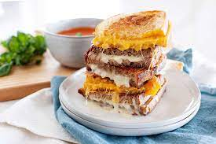

Grilled Cheese Sandwich

This is a recipe to make a restaurant style grilled cheese sandwich
Prep time: 10 mins
Cook time: 20 mins
Ingredients
- 4 slices white bread
- 3 tablespoons butter
- 4 slices cheddar cheese
Steps
- Preheat skillet over medium low heat
- Generously butter one side of a bread slice
- Place bread slice butter-side-down on skillet
- Add single piece of cheese to slice
- Let sit in skillet for 5 mins, until cheese starts to melt
- Remove slice, set aside and cover with tin foil
- Repeat steps 3 - 6 with remainder of bread slices
- Place one slice back in skillet, add additional slice on top
- Cook until both bread slices golden brown, flipping occasionally
- Repeat steps 8 and 9 with additional bread slices